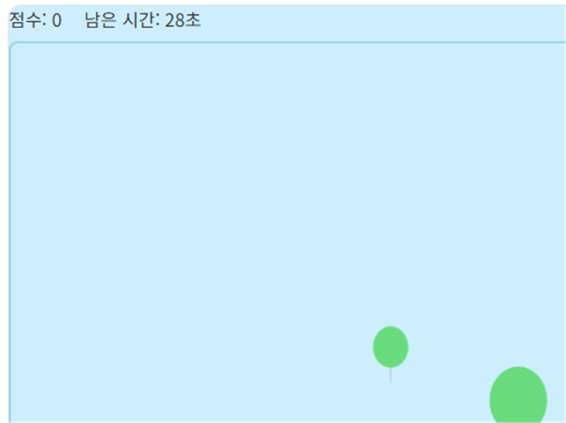

풍선 터뜨리기는 화면 아래쪽에서 계속 떠오르는 풍선을 클릭해서 터뜨리는 캐주얼 게임입니다. 색깔에 따라 점수가 다르니 잘 구분해서 클릭하세요.
기본 규칙
- 화면 아래에서 위로 풍선이 계속 떠오릅니다.
- 풍선을 클릭하면 터지면서 점수를 얻습니다.
- 풍선이 화면 위쪽 끝까지 놓치지 않고 도달하면 기회를 잃게 됩니다.
- 시간이 지날수록 풍선이 더 많이, 더 빠르게 올라옵니다.
고득점 팁
1. 화면 하단에 시선을 고정하세요
풍선은 화면 아래에서 생성되므로, 새로 생긴 풍선을 가장 먼저 발견할 수 있는 하단부에 시선을 두면 반응이 빨라집니다.
2. 가까운 풍선부터 순서대로 처리하세요
위쪽에 거의 다다른 풍선을 놓치면 손해가 크므로, 화면 위쪽에 가까운 풍선을 우선적으로 터뜨리고 아래쪽 풍선은 여유 있게 처리하는 순서가 효율적입니다.
직접 플레이해보고 싶다면 여기서 바로 시작할 수 있습니다.